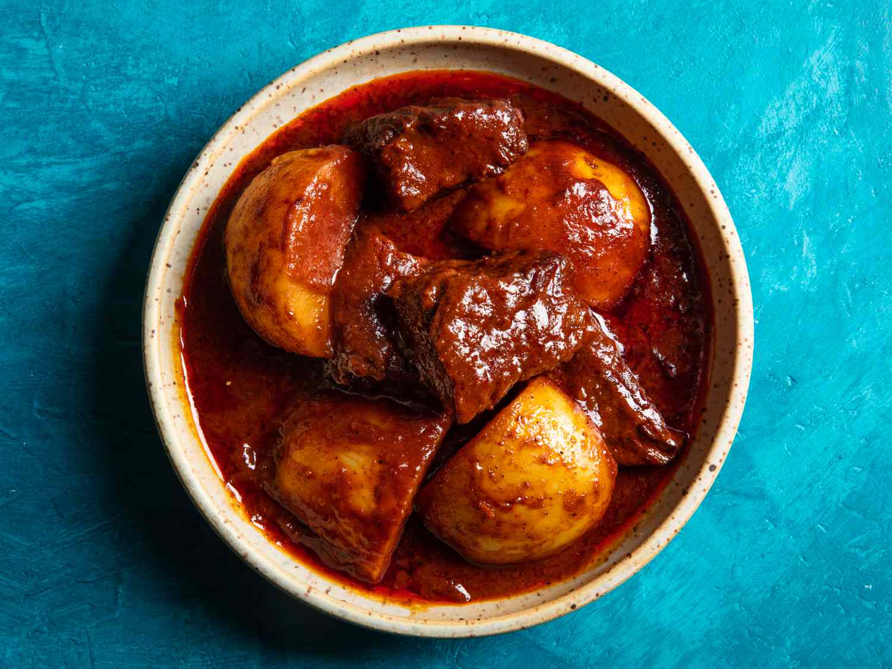

Gaeng Massaman

Ingredients (4 servings)
- 1.5 lbs (700g) boneless beef, cut into bite-sized pieces
- 2 tablespoons massaman curry paste
- 1 can (14 oz) coconut milk
- 1 large potato, peeled and cut into chunks
- 1 onion, sliced
- 1/2 cup roasted peanuts
- 2 tablespoons tamarind paste
- 2 tablespoons fish sauce
- 1 tablespoon palm sugar or brown sugar
- 1 cinnamon stick
- 3 cardamom pods
- 3 cloves
- 1 bay leaf
- 2 tablespoons vegetable oil
Preparation
Step 1
- Heat vegetable oil in a large pot over medium heat. Add massaman curry paste and stir-fry for 1-2 minutes until fragrant.
Step 2
- Add beef pieces to the pot and brown them on all sides.
Step 3
- Pour in coconut milk, tamarind paste, fish sauce, and palm sugar. Stir to combine.
Step 4
- Place cinnamon stick, cardamom pods, cloves, and bay leaf into the pot. Mix well.
Step 5
- Bring the mixture to a simmer, then reduce the heat to low. Cover the pot and let it gently simmer for about 1.5 hours or until the beef is tender.
Step 6
- Add potato chunks, sliced onion, and roasted peanuts. Continue simmering until the potatoes are cooked through.
Step 7
- Taste and adjust the seasoning if needed. If it's too thick, you can add a bit of water to reach your desired consistency.
Step 8
- Serve the Gaeng Massaman over steamed rice.
Step 9
- Enjoy your delicious homemade Gaeng Massaman!